O prato objetiva representar os povos indígenas do RS – Guaranis, Kaingangs e Jês.
INGREDIENTES: Pão de milho crioulo e manteiga de erva-mate e limão
ENTRADA
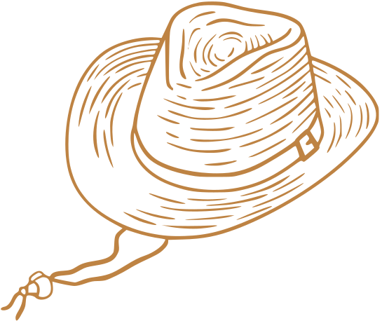
O prato representa a produção agrícola do nosso estado e a colonização germânica, por meio do queijo quark, da copa e do
crem.
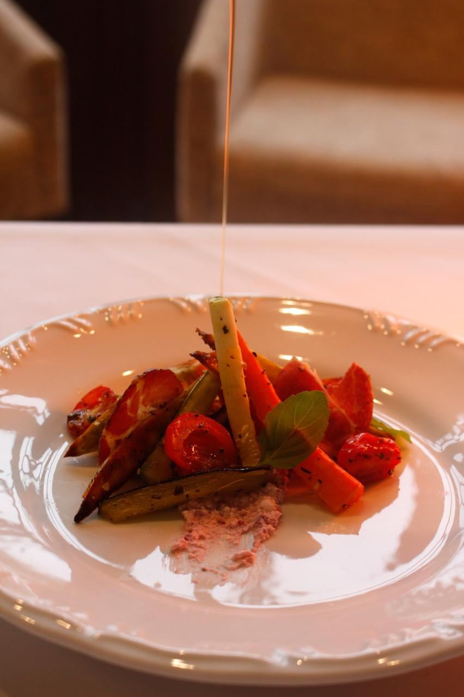
INGREDIENTES: Salada de legumes assados (cenoura, tomate, cebola, abobrinha, berinjela e batata-doce), queijo quark, crem e copa.
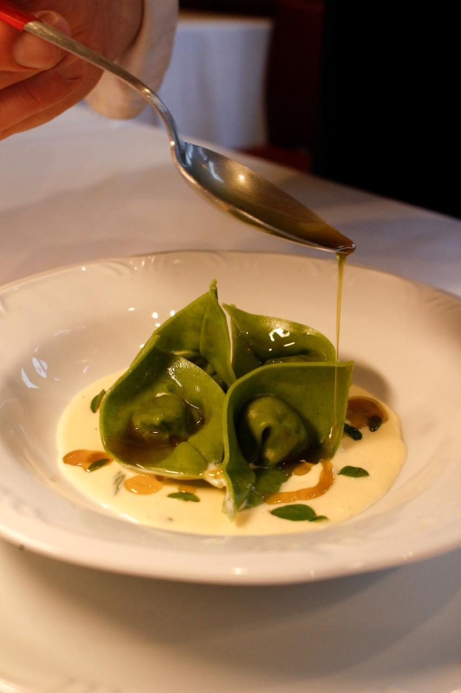
PRIMEIRO PRATO
O prato foi criado com o objetivo de representar a imigração italiana, por meio das massas frescas, e também os
africanos que viveram no sul do RS, através do charque e da moranga cabotiá, ingredientes consumidos pelos escravizados
nas charqueadas. Além disso, o prato faz referência à cor verde da bandeira do RS.
INGREDIENTES: Torteloni de espinafre com recheio de charque e moranga cabotiá ao molho de nata com manjerona.
SEGUNDO PRATO
O prato representa dois ingredientes icônicos do nosso estado: o arroz e a carne bovina. A costela será assada por um
longo tempo em baixa temperatura, remetendo ao tradicional costelão 12 horas. O prato simboliza a cor vermelha da
bandeira do RS.
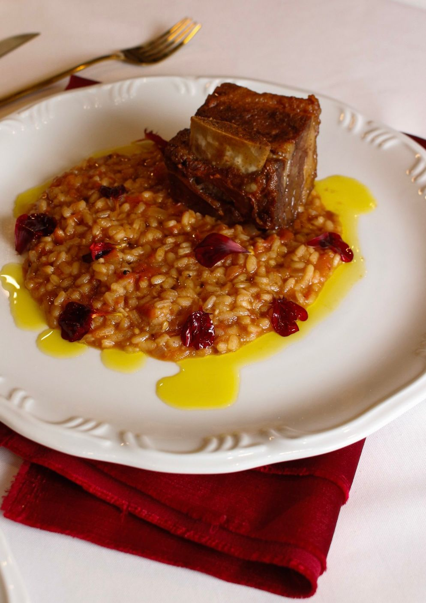
INGREDIENTES: Arroz cremoso de tomate com costela assada.
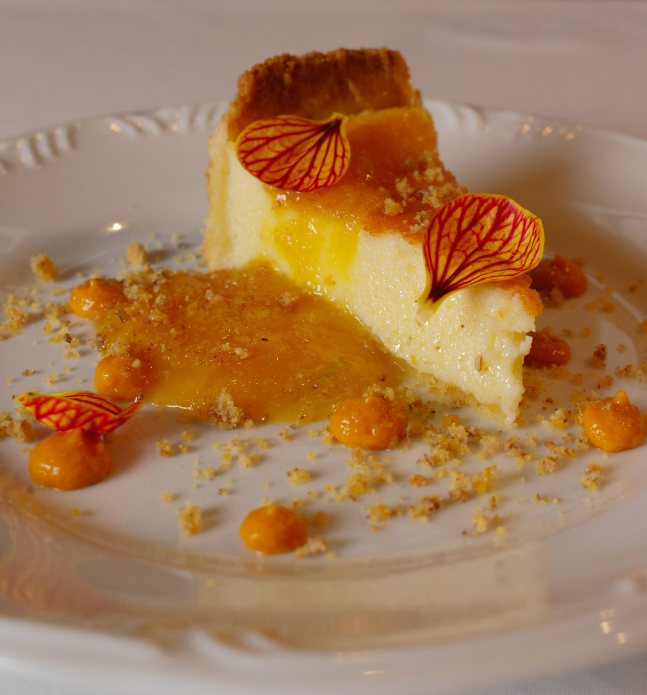
SOBREMESA
O prato representa ingredientes típicos do RS, como a bergamota montenegrina, o butiá, o queijo colonial e o pinhão.
Ressalta-se que o RS abriga os maiores butiazais do mundo, e o queijo colonial é um legado das migrações no estado.
INGREDIENTES: Cheesecake de queijo colonial com calda de bergamota e butiá, acompanhada de praliné de pinhão.
MIMO
Representar a hospitalidade do povo gaúcho, com um preparo típico trazido pela imigração italiana, consumido nos cafés
da manhã e após refeições, além dos encontros familiares – os Filós. Um agrado que fecha a experiência.
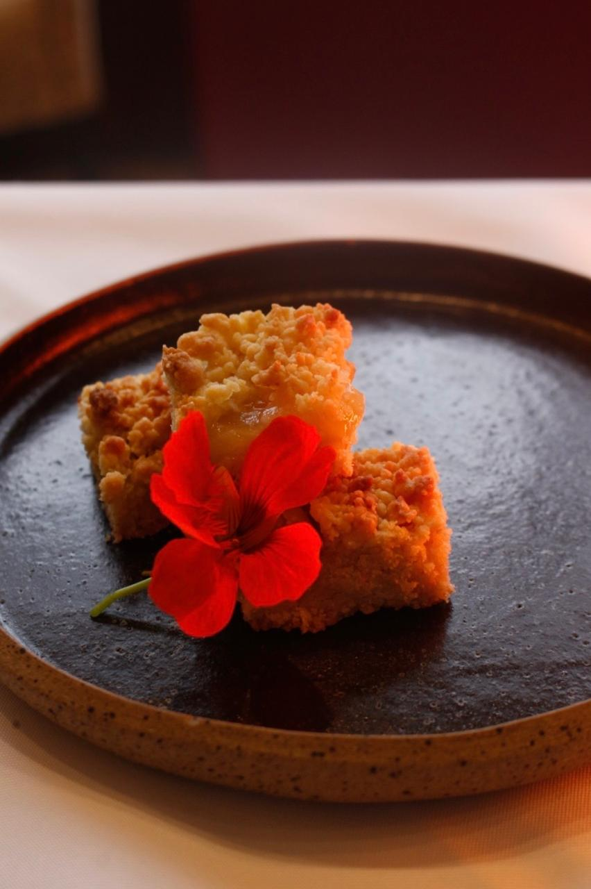
INGREDIENTES: Esfregolá de uva
HISTÓRIA DO BISTRÔ
Com o passar dos anos, o Bistrô se tornou um ponto de encontro para amantes da gastronomia, conquistando reconhecimento por seus pratos autênticos e ingredientes frescos.
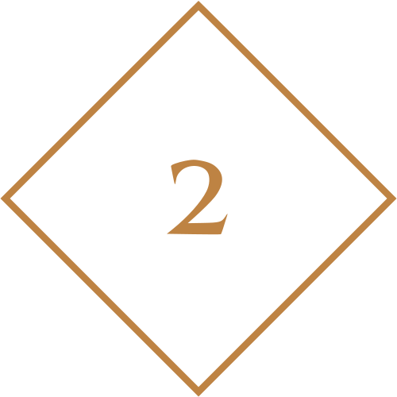
O Bistrô surgiu como uma iniciativa do técnico em 2015, para colocar em prática os conhecimentos adquiridos ao longo dos cursos técnicos.
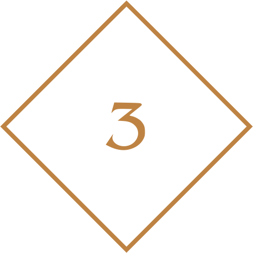
Unindo em um evento especial os conhecimentos adquiridos pelos alunos de Administração, Gastronomia e Informática.
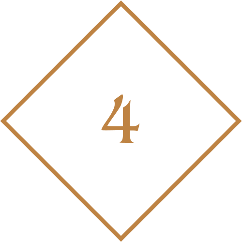
Através da criação de um bistrô, os alunos têm a oportunidade de aplicar suas habilidades em gestão, planejamento, finanças, marketing, e suas competências em técnicas gastronômicas, promovendo uma vivência empreendedora e multidisciplinar.
BISTRÔ 2024
No Bistrô Aurora do Sul, celebramos a rica gastronomia do Rio Grande do Sul com uma abordagem contemporânea. Nosso cardápio reinterpreta pratos tradicionais com um toque moderno, utilizando ingredientes locais frescos e técnicas inovadoras. Inspirados pela resiliência e pela união do nosso estado diante dos recentes eventos, oferecemos uma experiência culinária que homenageia a herança gaúcha e o espírito coletivo que fortalece nossa comunidade.
O nome Aurora do Sul foi escolhido por sua profunda conexão com o conceito de renascimento e renovação. "Aurora" representa o amanhecer, o início de um novo dia, trazendo consigo a promessa de novas oportunidades e a renovação da vida. Este simbolismo é perfeitamente alinhado com a proposta do bistrô de oferecer uma experiência gastronômica que reinventa e celebra os sabores tradicionais da culinária gaúcha, trazendo frescor e inovação.
O objetivo do bistrô é proporcionar uma experiência gastronômica diferenciada para nossos familiares, professores e amigos, retomando as origens do Rio Grande do Sul em uma maneira contemporânea. Bem como a demostração das habilidades adquiridas pelos alunos do curso técnico do CETEC durante esses dois anos.
CURSOS TÉCNICOS
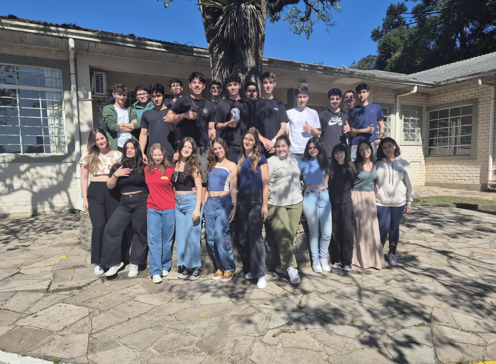
Curso Técnico em Administração: Forma técnicos empreendedores e capacitados a atuar nos mais diversos setores da economia, de forma criativa e ética aplicando os princípios e técnicas da administração.
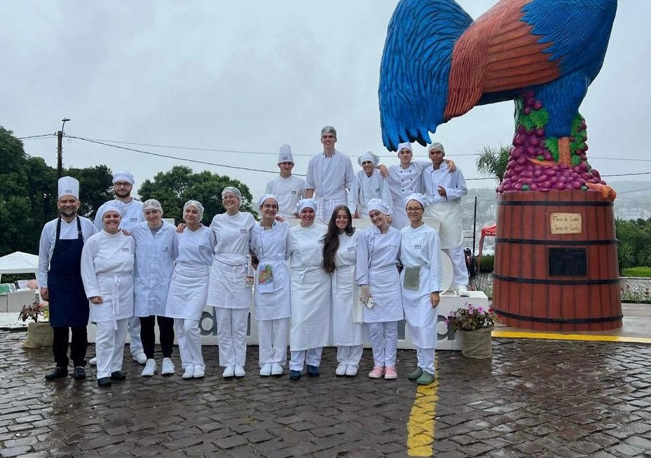
Curso Técnico em Gastronomia: Capacita o aluno a tornar-se um "Chef" e administrador de restaurantes ou empresas do ramo gastronômico.
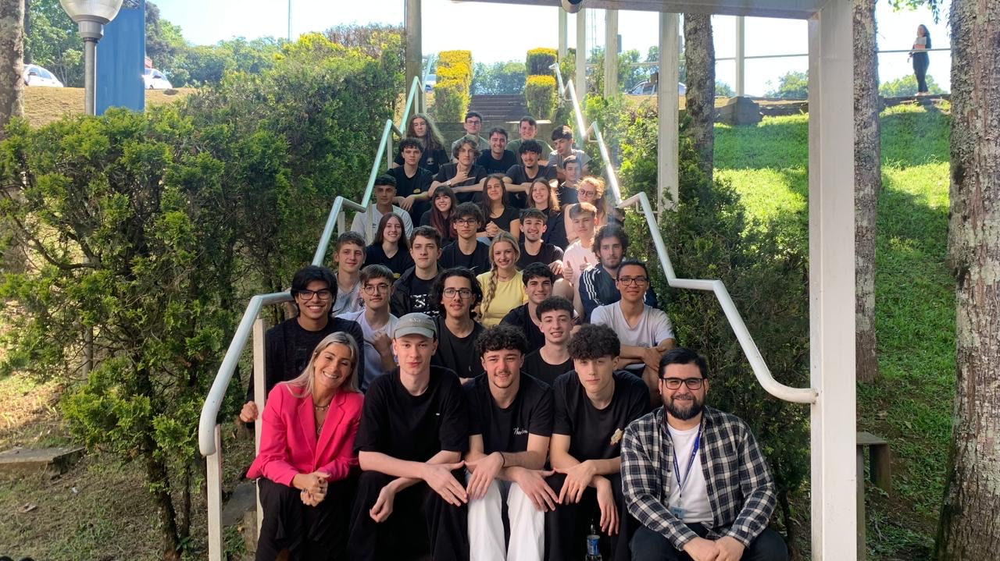
Curso Técnico em Informática: Forma técnicos na área de TI (tecnologia da informação) aptos a projetar e desenvolver sistemas de natureza complexa, bem como utilizar, aprimorar e integrar tecnologias específicas, tornando-os referência no mercado altamente competitivo de TI.
AGRADECIMENTOS
A turma dos cursos tecnicos de 2024 agradece
aos professores responsáveis pelo projeto em cada curso: Beatriz Bassotto, Ederson Almeida, Cristina Cemin e Israel Bertamoni e aos demais professores
que colaboraram com este projeto. A Coordenadora dos cursos técnicos do Cetec Viviane Dambros, ao coordenador pedagógico do CETEC
Ensino Médio Nilseu Paulo Tortelli e à diretora do CETEC Ana Cristina Possapp Cesa. Agradecemos também o apoio da Escola de Gastronomia
da Universidade de Caxias do Sul.
Ademais, nossos cumprimentos e parabéns aos alunos envolvidos neste trabalho, que se dedicaram à realização do Bistrô
Aurora do Sul.
FALE CONOSCO
Julia Adelina Castilhos da Silva (Administração) juliaavivan@gmail.com (54) 99203-2322